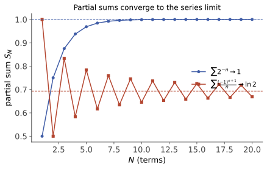

数分 IV · 级数
级数回答"无限个数/函数加起来是什么意思"。本页三层：数项级数（收敛判别工具箱）→ 函数项级数（一致收敛——本页乃至下册分析的分水岭概念）→ 两大特殊家族（幂级数与 Fourier 级数）。
1. 数项级数

定义 \(\sum a_n\) 收敛指部分和 \(S_n = \sum_{k=1}^n a_k\) 收敛。必要条件：\(a_n \to 0\)（不充分！调和级数 \(\sum\frac1n\) 发散——用 \(S_{2n} - S_n > \frac12\) 或积分判别看穿）。Cauchy 准则：\(\forall\varepsilon\,\exists N:\ \left|\sum_{k=n+1}^{m} a_k\right| < \varepsilon\)。
1.1 正项级数（部分和单调，收敛 \(\iff\) 有界）
| 判别法 | 内容 | 适用直觉 |
|---|---|---|
| 比较法（含极限形式） | \(a_n \leq C b_n\)，\(\sum b_n\) 收敛 ⇒ \(\sum a_n\) 收敛 | 与标尺比阶 |
| 标尺：\(p\)-级数 | \(\sum \frac{1}{n^p}\) 收敛 \(\iff p > 1\) | 一切比较的基准 |
| 比值法（d'Alembert） | \(\frac{a_{n+1}}{a_n} \to q\)：\(q<1\) 收，\(q>1\) 发，\(=1\) 失效 | 含 \(n!\)、\(a^n\) |
| 根值法（Cauchy） | \(\sqrt[n]{a_n} \to q\)（严格形式用 \(\varlimsup\)）同上 | 含 \(n\) 次幂 |
| 积分判别法 | \(f\) 正、减：\(\sum f(n)\) 与 \(\int_1^\infty f\,dx\) 同敛散 | \(\frac{1}{n\ln n}\) 型（发散！） |
（比值/根值对 \(p\)-级数全部失效——它们本质是"与几何级数比"，只能分辨指数级差异。）
1.2 任意项级数
- 绝对收敛（\(\sum|a_n|\) 收敛）⇒ 收敛；且绝对收敛级数任意重排和不变；
- 条件收敛（收敛但非绝对）的诡异性：Riemann 重排定理——可重排到任意指定和（甚至发散）。条件收敛的和依赖加法顺序！
- Leibniz 判别法：交错级数 \(\sum(-1)^n u_n\)，\(u_n\) 单调趋 0 ⇒ 收敛，且余项 \(|R_n| \leq u_{n+1}\)。代表：\(\sum\frac{(-1)^n}{n}\) 条件收敛；
- Dirichlet 判别法：\(\{\)部分和有界\(\}\times\{\)单调趋 0\(\}\)；Abel 判别法：\(\{\)收敛\(\}\times\{\)单调有界\(\}\)。（与反常积分的同名判别法完全平行——一套思想两处兑现。）
2. 函数项级数与一致收敛
问题：\(S(x) = \sum u_n(x)\) 逐点收敛时，连续性/可积性/可导性能否从 \(u_n\) 传给 \(S\)？答案：逐点收敛不够（反例：\(f_n(x) = x^n\) 在 \([0,1]\) 逐点收敛到不连续函数）。需要更强的收敛：
定义（一致收敛） \(S_n \rightrightarrows S\) 于 \(D\) \(\iff \sup_{x \in D}|S_n(x) - S(x)| \to 0\)——一个 \(N\) 管住所有 \(x\)（对比逐点：每个 \(x\) 各配各的 \(N\)）。
判别工具：
- Weierstrass M-判别法（最常用）：\(|u_n(x)| \leq M_n\) 且 \(\sum M_n\) 收敛 ⇒ 一致（且绝对）收敛；
- Dirichlet / Abel 判别法的函数项版本（处理 M 法失效的条件收敛型）。
三大传递定理（一致收敛买到的东西）：
- 连续性：\(u_n\) 连续 + 一致收敛 ⇒ \(S\) 连续（极限可交换 \(\lim_x \lim_n = \lim_n \lim_x\)）；
- 逐项积分：\(\int_a^b S = \sum \int_a^b u_n\)；
- 逐项求导：需 \(\sum u_n'\) 一致收敛（对导数级数提要求，不是对原级数）。
🔗 AI 衔接：一致收敛是"函数序列极限保性质"的通行证——万能逼近定理（ai 课 04 讲）里"一致稠密"的"一致"就是它。
3. 幂级数
定理（Abel） \(\sum a_n x^n\) 在 \(x_0 \neq 0\) 收敛 ⇒ 在 \(|x| < |x_0|\) 内绝对收敛。⇒ 收敛域是以原点为心的区间。
收敛半径（Cauchy–Hadamard）：
端点 \(x = \pm R\) 单独代入检验。内闭一致收敛：在 \([-r, r]\ (r < R)\) 上一致收敛 ⇒ 和函数在 \((-R, R)\) 内连续、可逐项积分、可逐项求导任意次（且求导积分不改变收敛半径）——幂级数是"性质最好的函数项级数"。
Taylor 级数：\(f\) 的 Taylor 级数收敛到 \(f\) \(\iff\) 余项 \(R_n \to 0\)（光滑不保证！反例 \(e^{-1/x^2}\) 各阶导数在 0 全为 0，Taylor 级数恒 0 ≠ 原函数）。求和函数套路：逐项积分/求导化归到几何级数 \(\sum x^n = \frac{1}{1-x}\)（例：\(\sum n x^{n-1} = \frac{1}{(1-x)^2}\) 由逐项求导得）。
4. Fourier 级数
目标：用三角函数系 \(\{1, \cos nx, \sin nx\}\)（在 \([-\pi, \pi]\) 上正交：不同成员乘积积分为零）展开周期函数：
（系数公式的来历：假设可逐项积分，两边乘 \(\cos nx\) 积分，正交性杀掉其余所有项——系数 = 在正交基上的投影，这是高代 VI 内积空间观点的直接应用，两页对照读。）
定理（Dirichlet 收敛定理） \(f\) 按段光滑，则 Fourier 级数处处收敛到 \(\frac{f(x^+) + f(x^-)}{2}\)（连续点即 \(f(x)\)）。
Parseval 等式：\(\dfrac{a_0^2}{2} + \sum(a_n^2 + b_n^2) = \dfrac1\pi\int_{-\pi}^{\pi} f^2\,dx\)——"能量守恒"：函数的能量 = 各频率分量能量之和。
奇偶函数正弦/余弦展开；周期 \(2l\) 的伸缩版本。🔗 AI 衔接：Fourier 是"信号 → 频域"的原型，声谱图（comfy 课 19 讲 mel 谱）、位置编码的三角函数族（ai 课 06 讲）都是它的后代；Parseval 在泛函页升格为 Hilbert 空间的普遍定理。
5. 典型例题
例 1（判敛综合） 判别 \(\sum\limits_{n=1}^\infty \dfrac{n!}{n^n}\)。 解：比值法 \(\frac{a_{n+1}}{a_n} = \frac{(n+1)!\,n^n}{(n+1)^{n+1} n!} = \left(\frac{n}{n+1}\right)^n \to \frac1e < 1\)，收敛。（顺带记住 \(\frac{n!}{n^n}\) 的衰减本质是 \(e^{-n}\) 级。）
例 2（幂级数求和） 求 \(\sum\limits_{n=1}^\infty \dfrac{x^n}{n}\) 的和函数。 解：\(R = 1\)；逐项求导得 \(\sum x^{n-1} = \frac{1}{1-x}\)，积分回去 \(S(x) = -\ln(1-x)\)，\(x \in [-1, 1)\)（\(x = -1\) 端点由 Leibniz 收敛 + Abel 第二定理续上）。
例 3（Fourier 数值副产品） 把 \(f(x) = x^2,\ x\in[-\pi,\pi]\) 展开：\(x^2 = \frac{\pi^2}{3} + 4\sum\limits_{n=1}^\infty \frac{(-1)^n}{n^2}\cos nx\)。代 \(x = \pi\) 得
——Basel 问题，Fourier 级数最著名的免费赠品。\(\blacksquare\)
下一页进入多元世界：偏导数、梯度与"可微"的真正含义——机器学习数学的主产地。